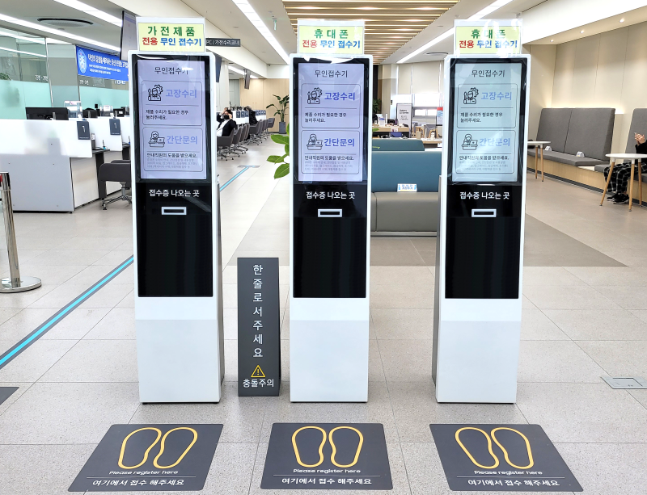
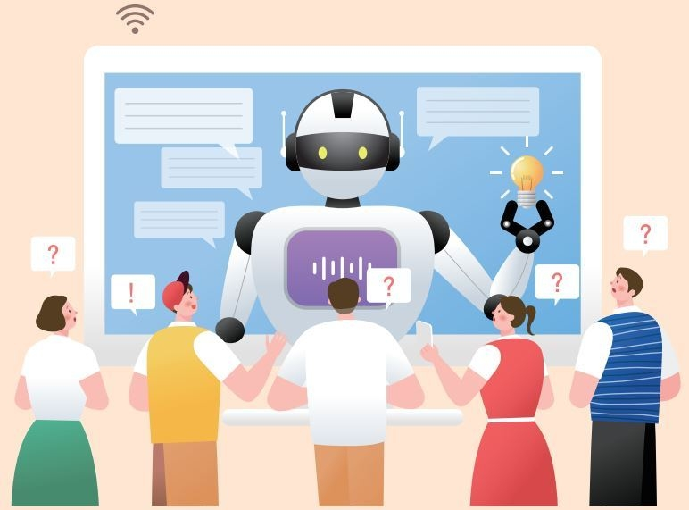
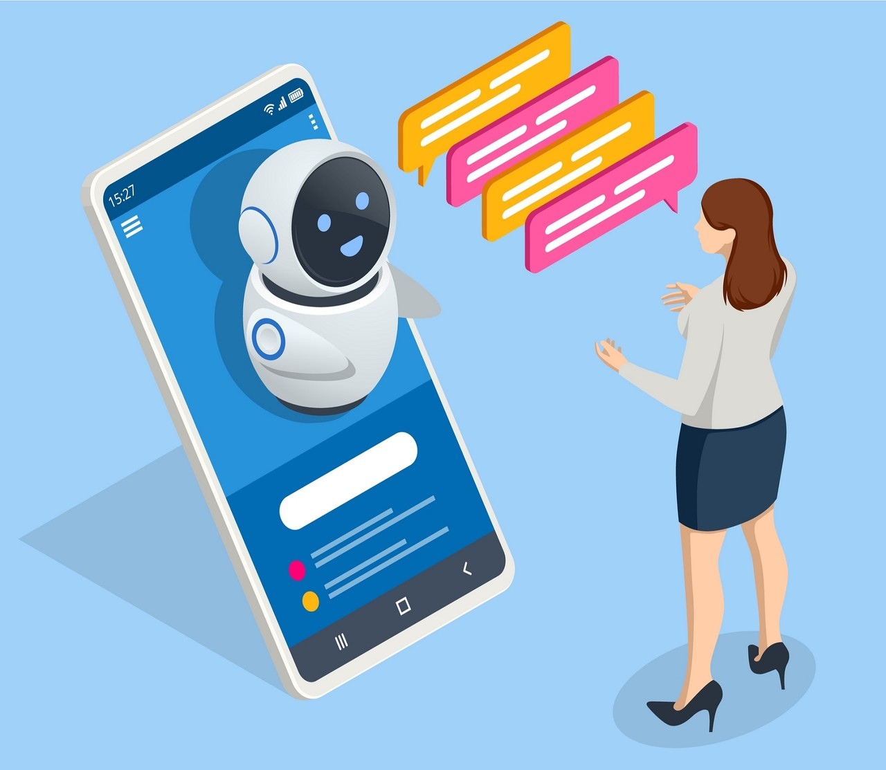

한경, AI가 공문서 쓰고 정보공개 업무지원...AI 행정서비스 시범운영

삼성전자서비스 네이버 블로그
24시간 무휴 고객지원: 기업의 고객 서비스 센터에 챗봇이 도입되어 대기 시간 없이 즉각적인 응답 제공. 주문, 예약, 결제 등의 자동 처리: 챗봇이 사용자의 주문을 받고 결제를 지원하는 서비스 자동 화.
AI TIMES, 헬스케어가 AI 업계 화두... 지자체, 기업, 건강관리 AI 기술 속속 내놓는다
증상 분석과 예비 진단: 의료 상담 챗봇이 사용자의 증상을 바탕으로 예비 진단을 내리고 적절한 의료 기관 연결. 개인 맞춤형 건강 관리: 건강 데이터와 연계하여 운동, 식단, 수면 등 관리에 대한 지속적 조 언 제공.

한국교육신문, AI, SW 필수교육과 대학입시 반영의 과제
맞춤형 학습 지도: 학습자의 수준과 취약점을 파악하여 개인화된 학습 자료와 피드백 제공. 외국어 학습 파트너: 자연스러운 대화형 외국어 학습 파트너로 활용.

AI TIMES, AI가 상담 고객 마음까지 읽어낸다
정서 분석 및 상담: 사용자의 감정 상태를 파악하고 정서적 지지를 제공하는 챗봇. 멘탈 헬스 케어 보조: 정신건강 위험군을 조기에 파악하여 전문 상담 연결.
한경, AI가 공문서 쓰고 정보공개 업무지원...AI 행정서비스 시범운영
민원 처리 자동화: 복잡한 행정 절차와 민원 처리를 챗봇이 가이드. 재난 대응 및 정보 제공: 긴급 상황 시 빠른 정보 전달 및 대처법 안내.
시사저널, 위협인가 공생인가...AI 콘텐츠의 명과 암
시나리오, 기사, 소설 창작 보조: 창작자의 아이디어를 보완하고 다양한 문체와 구조의 글을 생성. 디자인 및 영상 편집 추천: 사용자의 입력에 맞춘 이미지 생성, 영상 편집 방향 제안.